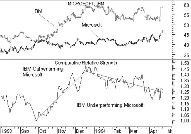

Comparative Relative Strength compares two securities to show how the securities are performing relative to each other. Be careful not to confuse Comparative Relative Strength with the Relative Strength Index.
Comparative Relative Strength compares a security's price change with that of a "base" security. When the Comparative Relative Strength indicator is moving up, it shows that the security is performing better than the base security. When the indicator is moving sideways, it shows that both securities are performing the same (i.e., rising and falling by the same percentages). When the indicator is moving down, it shows that the security is performing worse than the base security (i.e., not rising as fast or falling faster).
Comparative Relative Strength is often used to compare a security's performance with a market index. It is also useful in developing spreads (i.e., buy the best performer and short the weaker issue).
In the following charts, the top chart displays both Microsoft and IBM's prices.
 The bottom chart shows the Comparative Relative Strength of IBM compared to Microsoft.The Comparative Relative Strength indicator shows that IBM's price outperformed Microsoft's price during the last three months of 1993. It also shows that IBM's price then underperformed Microsoft's price during the first three months of 1994. (I drew the trendlines on the Comparative Relative Strength indicator using the linear regression technique.)
The Comparative Relative Strength indicator is calculated by dividing one security's price by a second security's price (the "base" security). The result of this division is the ratio, or relationship, between the two securities.